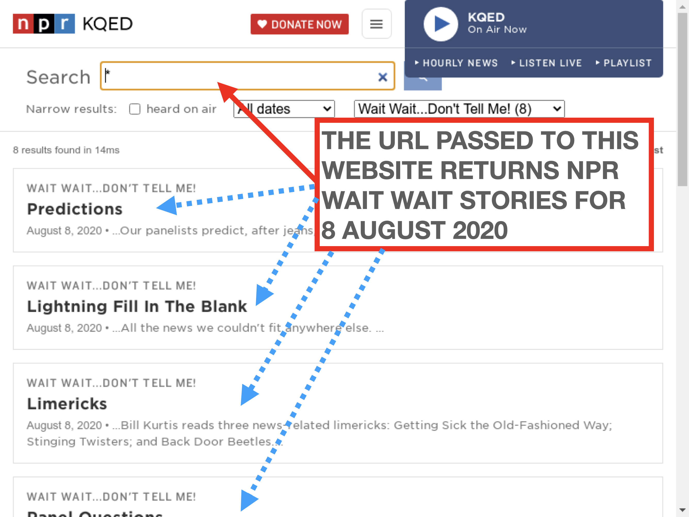

6. Core APIs¶
This document describes the nprstuff core API, which provides the low-level back-end for the CLI front ends described in Core Functionality and New Functionality. These modules live under nprstuff.core.
The most fundamental change, from the older NPR API, is the usage of webscraping (through Selenium_) and inference to craft responses that return stories for NPR Fresh Air and NPR Wait Wait episodes. Here is a screenshot.
{kind=link}
To get NPR Wait Wait episodes for 8 AUGUST 2020, one needs to put this URL into address bar of the Selenium_ headless browser,
https://www.npr.org/search?query=*&page=1&refinementList[shows]=Wait Wait...Don't Tell Me!&range[lastModifiedDate][min]=1596783600&range[lastModifiedDate][max]=1596870000&sortType=byDateAsc
This unwieldy process required a fair amount of trial and error to (mostly) work.
Second, I have redesigned the Python logging functionality in the following way,
custom format of the logging output, formatted as
'%(levelname)s %(module)s.%(funcName)s (%(lineno)d): %(message)s'. See the logging cookbook for more information on what this format means.the Core Functionality command line tools have an extra argument flag,
--level, that specifies whether to print out logging output and the following debug levels:DEBUG,INFO, orERROR.
6.1. npr_utils module¶
This module contains common utilities to get the proper metadata for NPR programs, to name these media files in the proper date format, and to get the full paths to the LibAV or FFMPEG and HandBrakeCLI tools used to create the NPR programs in M4A and MP3 formats (among other functionalities).
6.2. autocrop_image module¶
This module provides low-level functionality that implements automatic cropping of lossy (PNG, JPEG, TIFF) and PDF images.
This PDF autocropping functionality is copied over from this repo. That repository is based off pdfcrop.pl to calculate the BoundingBox. This functionality requires a working ghostscript (using the gs executable) to calculate the bounding box, and the PyPDF2 module to read and manipulate PDF files.

Three methods – get_boundingbox, crop_pdf, and crop_pdf_singlepage – are the higher level hooks to the PDF autocropping functionality.
6.3. convert_image module¶
This module provides the low-level functionality to use the CloudConvert API to convert PDF, PNG, and SVG images into a final PNG image, utility functions to create MP4 movies from a sequence of images, and to create animated GIF files, and created square movies (useful for upload to Instagram_).
This module also requires QSvgRenderer for some of its functionality. However, PyPI does not have Python bindings to QtSVG. To install on an Ubuntu machine, you can thoughts and prayers these instructions
sudo apt install python3-pyqt5.qtsvg
There may be similar installation instructions on other Linux, Windows and Mac OS X machines.
6.4. music_to_m4a module¶
This module provides low-level functionality that converts other music formats (MP3, OGG, and FLAC) into M4A. It also contains functionality to fix M4A metadata.
6.5. freshair and freshair_by_year modules¶
These two modules provide the low level functionality to process and download NPR Fresh Air episodes. Until a few months ago, the older NPR API existed and worked without issues, but because it was so successful it went away. I now try to fix functionality that is broken, but it is slow undocumented going – hence, diffusion.
6.6. thisamericanlife module¶
This module provides the low level functionality to the This American Life CLI and some extra functionality.
6.7. waitwait and waitwait_realmedia modules¶
These two modules provide the low level functionality to process and download NPR Wait Wait…Don’t Tell Me episodes.Until a few months ago, the older NPR API existed and worked without issues, but because it was so successful it went away. I now try to fix functionality that is broken, but it is slow undocumented going – hence, diffusion. This is just like my experience with the freshair and freshair_by_year modules.
Note
The functionality for downloading RealMedia NPR Wait Wait episodes, which lives in waitwait_realmedia, has not been tested in years. This module is used to download Wait Wait episodes before 2006; it may no longer work!